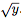

O objetivo desta atividade é a familiarização com a infraestrutura de simulação do computador IAS e programação em linguagem de máquina.
Nesta atividade você deverá escrever um pequeno programa em linguagem de máquina do computador IAS para calcular a velocidade inicial de um projétil que precisa atingir um alvo a uma determinada distância, como ilustrado na Figura 1.
Figura 1: Ilustração da trajetória de um projétil no espaço bidimensional.
Suponha que o projétil seja lançado a 45o do eixo x. Então você pode usar a fórmula:
Note que o IAS não possui instrução para a raiz quadrada. Por isso, você deve calcular uma expressão que aproxima o valor da raiz quadrada para números inteiros. Tal expressão aproxima um chute para o valor da raiz quadrada. Seja k um chute aproximado para . Comece supondo que
No capítulo 5 do documento programando o IAS você encontrará detalhes sobre as operações do IAS e sua codificação em linguagem de máquina e no final desse documento existe um sumário de todas as instruções.
Antes de iniciar a simulação, é necessário carregar o programa na memória principal do IAS. Para carregar as instruções e dados iniciais você deve fornecer um "mapa de memória" na área indicada do simulador. O mapa de memória contém uma lista de valores que serão utilizados para iniciar a memória da máquina antes de a execução iniciar. O mapa de memória é um arquivo no formato texto no qual cada linha especifica o endereço e o valor que deve ser gravado na palavra de memória associada ao endereço. Cada linha consiste de uma coluna representando o endereço e outra representando o valor armazenado na palavra de memória associada àquele endereço, conforme o exemplo abaixo:
000 0110015000
001 0D40000000
# ...
100 00000088D8
Esse programa-exemplo copia o conteúdo da posição 0x100 de memória para o registrador AC (operação 0x01), faz um deslocamento para a direita (operação 0x15) no dado recém-obtido e por fim realiza um salto para o endereço de memória 0x400 (operação 0D). Note que todos os endereços e valores no mapa de memória estão representados no sistema hexadecimal.
Você pode introduzir espaços em branco entre os caracteres da segunda coluna (dados/instruções), linhas em branco e comentários para facilitar a leitura. No entanto, cada linha que especifica um conteúdo da memória deve conter exatamente 13 dígitos hexadecimais, 3 para o endereço e 10 para o conteúdo da memória. O trecho de código abaixo é equivalente ao anterior:
000 01 100 15 000
001 0D 400 00 000 #isso eh um comentario
# ...
100 00 00 00 88 D8
Para testar o seu programa você deve usar o simulador do IAS. Para isso, acesse a página do simulador através do link: http://www.ic.unicamp.br/~edson/disciplinas/mc404/2017-2s/abef/IAS-sim/. A Figura 2 apresenta uma descrição dos elementos da interface do simulador.
Note que existem três caixas indicadas como memória principal. Elas apresentam o mesmo conteúdo, carregado a partir do mapa de memória, replicado para facilitar a visualização de diversas áreas da memória. Após carregado o programa, pode-se optar por um dos três modos de execução: ciclo a ciclo (através do botão Next); instrução a instrução (botão Step); ou execução automática (botão Run All). Uma vez iniciado o programa, o botão Reset reinicia a aplicação, habilitando os demais modos, assim como o carregamento de um novo mapa de memória. Para terminar a execução, você pode realizar um salto para o endereço 0x400 - veja que esse valor representa o número 1024 no sistema decimal, e sabemos que o IAS tem 1024 palavras de memória, que são os endereços de 0x000 a 0x3FF no mapa de memória. Ou seja, ao efetuar um salto para o endereço 0x400, estamos desviando o fluxo de execução para uma posição de memória inexistente, portanto o simulador irá parar a execução e apresentar a mensagem ''PROGRAM ABORTED'', ilustrada na Figura 3.
Endereço da atividade no sistema SuSy: https://susy.ic.unicamp.br:9999/mc404abef/02ab ou https://susy.ic.unicamp.br:9999/mc404abef/02ef
Para avaliar seu programa, executaremos o mesmo com 10 entradas diferentes e verificaremos o resultado armazenado no registrador AC.
A avaliação será realizada com o mecanismo de automação de testes do simulador IAS, disponível na página: http://www.ic.unicamp.br/~edson/disciplinas/mc404/2017-2s/abef/IAS-sim/testmodule.html. Este mecanismo toma como entrada um mapa de memória (memory map), com o programa a ser testado, e um vetor de testes (test object), que define os parâmetros de entrada e saída do teste. Os parâmetros de entrada consistem em valores que serão inseridos na memória ou registradores do simulador enquanto que os parâmetros de saída consistem em valores que serão verificados ao término da execução. Por exemplo, o primeiro teste do vetor de testes abaixo indica que a posição de memória 0x105 será iniciada com o valor 0 antes do início da simulação e, ao término da simulação, o valor do registrador AC será comparado ao valor 0.
O vetor de testes a seguir define os 5 casos de testes públicos desta atividade de laboratório. OBS: O VETOR DE TESTES ABAIXO É O VETOR DE TESTES CORRETO.
[
{
"input": [{"where": "ram", "position": "0x105", "value": 34}],
"output": [{"where": "reg", "position": "ac", "value": 18}]
},
{
"input": [{"where": "ram", "position": "0x105", "value": 1}],
"output": [{"where": "reg", "position": "ac", "value": 3}]
},
{
"input": [{"where": "ram", "position": "0x105", "value": 3218}],
"output": [{"where": "reg", "position": "ac", "value": 179}]
},
{
"input": [{"where": "ram", "position": "0x105", "value": 28306}],
"output": [{"where": "reg", "position": "ac", "value": 532}]
}
]
Nota: esse apêndice tem caráter de curiosidade, não sendo necessária sua leitura para compreensão do laboratório.
Seja vy0 a velocidade vertical inicial do projétil, vx a velocidade horizontal, g a aceleração da gravidade e t o tempo. As equações de movimento são: